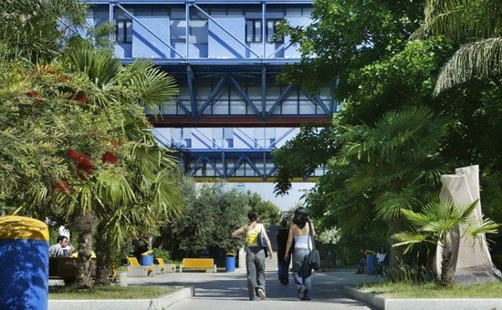
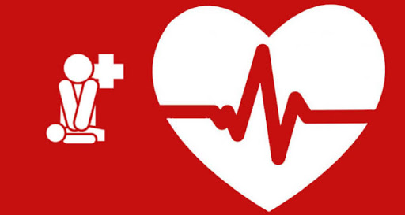
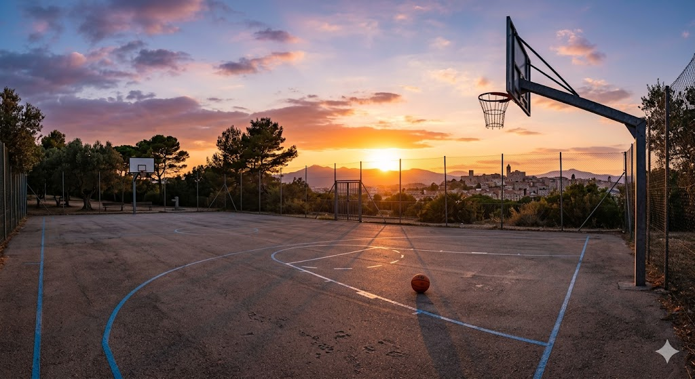
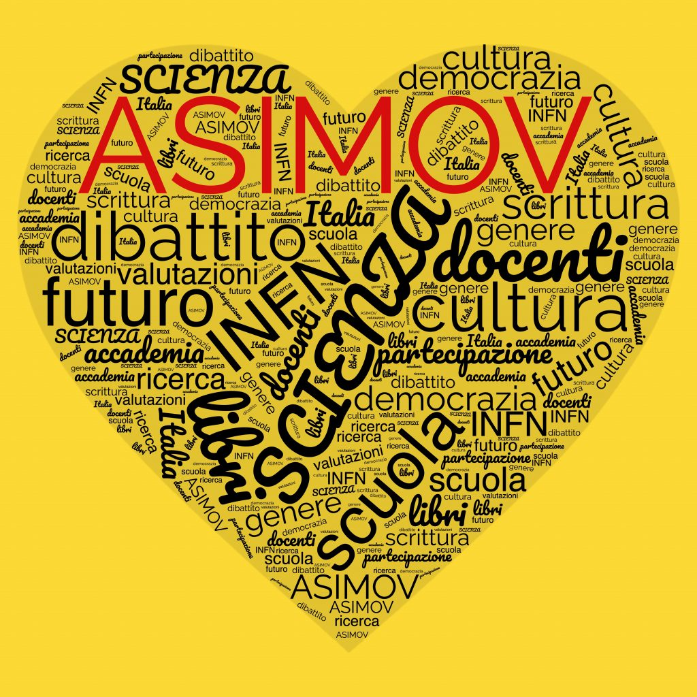
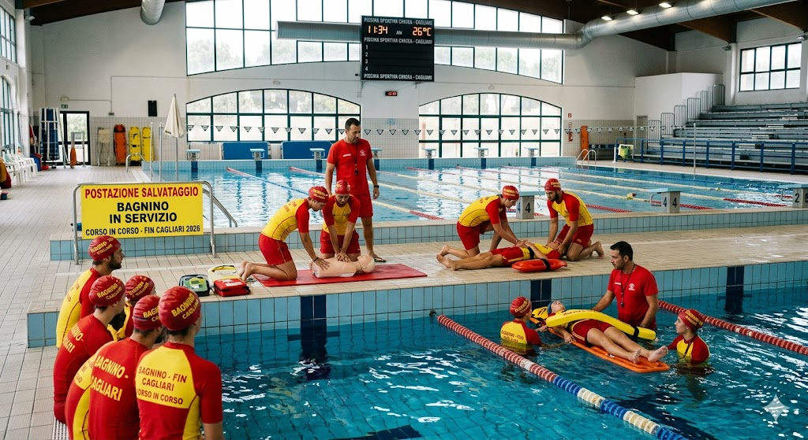
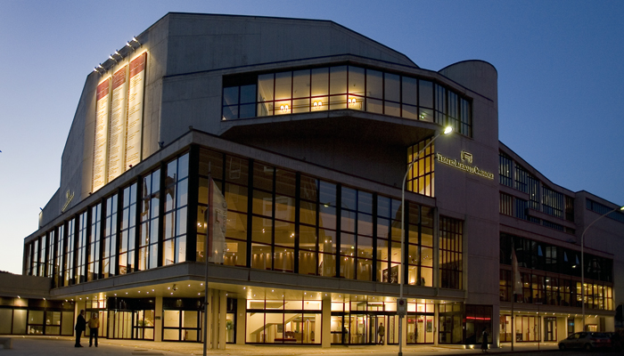

Una raccolta di tutti i progetti che ho svolto durante l'intero corso di studi.

Visita alla cittadella Universitarià per inziare ad avere una visione piu chiara per il nostro futuro.

Ho avuto l'opportununità presso la Rarinates Cagliari ti poter apprendere i supporti di base per il corso di BLSD.

Nel corso di questi anni scolastici lo sport ha giocato un ruolo fondamentale, sia per quanto riguarda l'ambito interpersonale sia per quanto riguarda la capacita di conciliare studio e sport.

Il Premio Asimov è un concorso di divulgazione scientifica per studenti superiori che promuove la cultura scientifica, il pensiero critico e assegna crediti PCTO tramite la lettura e la recensione di libri.

Ho avuto la fortuna di poter partecipare alla corso da bagnino, una dei progetti piu importanti nel mi percorso di studi. Insegna a gestire la calma e la folla e a prendere decisioni giuste e corrette sotto stress, Oltre alla possibilita di poter aiutare qualcuno.

Io e la mia classe abbiam oavuto l'opportunita di poter andare dietro le quinte del treatro lirico di Cagliari, poter vedere come sono progettati gli spettacoli sia a livello logistico che estetico.